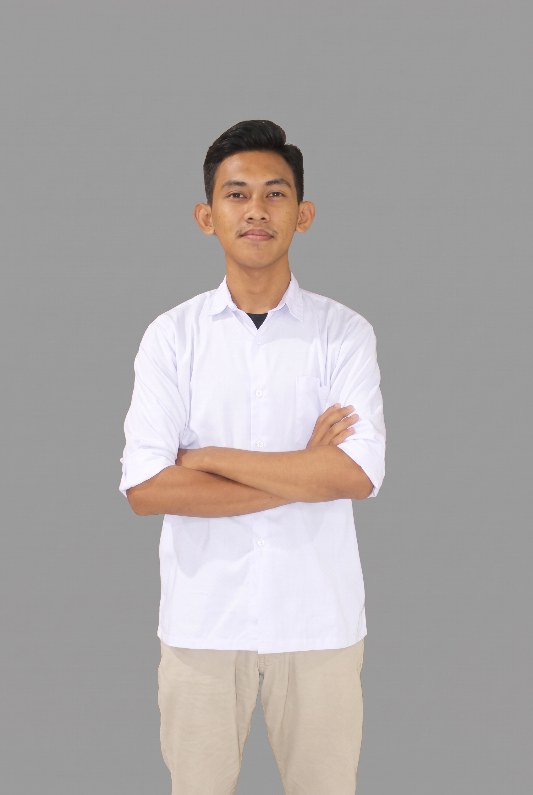

Human Resources & Administration Specialist
Lulusan D3 Manajemen Administrasi Universitas Sebelas Maret (IPK 3.88/4.00). Berdedikasi menciptakan tata kelola administrasi yang presisi dan pengembangan sumber daya manusia yang berdampak positif bagi organisasi.
3.88
IPK Cumlaude UNS
4+
Pengalaman Industri & BPS
3
Sertifikasi Kompetensi

Domisili
Boyolali, Jawa Tengah
Berbekal latar belakang akademik di bidang Manajemen Administrasi serta pengalaman lapangan yang beragam—mulai dari pengelolaan pelatihan karyawan di perusahaan manufaktur berskala besar hingga pendataan sensus nasional—saya terbiasa bekerja dengan standar akurasi tinggi, komunikatif, dan terstruktur.
Saya memiliki minat mendalam dalam pengelolaan sumber daya manusia (HR), penyusunan Standar Operasional Prosedur (SOP), administrasi perkantoran modern, serta visualisasi informasi yang komunikatif.
Diploma Tiga (D3) Manajemen Administrasi — Surakarta
Fokus & Proyek Akademik:
Kontribusi nyata dalam pengelolaan sumber daya manusia, administrasi proyek, dan validasi data lapangan.
Badan Pusat Statistik (BPS) Kabupaten Boyolali
PT Pan Brothers Tbk — Boyolali, Jawa Tengah
PT Digitama Sinergi Indonesia (Digitama Consulting) — Sleman, Yogyakarta
Badan Pusat Statistik (BPS)
Himpunan Mahasiswa Manajemen Administrasi UNS
Menyusun program kerja divisi jangka pendek dan panjang, mengarahkan strategi konten visual (desain & video), serta memonitoring dan mengevaluasi kinerja staf secara berkala.
Manajemen Administrasi Empowering Hard and Soft Skill
Memimpin penuh perencanaan dan eksekusi acara pengembangan kompetensi mahasiswa, serta mengoordinasikan seluruh divisi panitia dengan steering committee.
Himpunan Mahasiswa Manajemen Administrasi UNS
Mengelola komunikasi publik melalui media sosial himpunan, merencanakan penjadwalan publikasi, serta memproduksi konten kreatif untuk memperkuat branding organisasi.
KPU Sekolah Vokasi UNS & Vocazens of the Champions (VOC)
Merancang strategi kampanye peningkatan partisipasi pemilih fakultas (KPU SV UNS) serta mengelola logistik dan kesiapan operasional acara skala kampus (VOC).
Meraih penghargaan pada ajang Manajemen Administrasi Great Innovation Competition (MAGIC) 2026 UNS melalui karya bertema "Transformasi Digital dalam Kehidupan Mahasiswa dan Dunia Kerja"—membuktikan kemampuan sintesis data dan komunikasi visual.
2nd Place
Visual Information & Design
LSP Kompetensi Administrasi Perkantoran
Lembaga Sertifikasi Profesi Universitas Sebelas Maret
International Test Center (ITC)